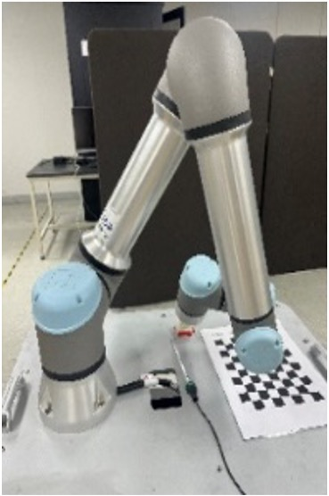
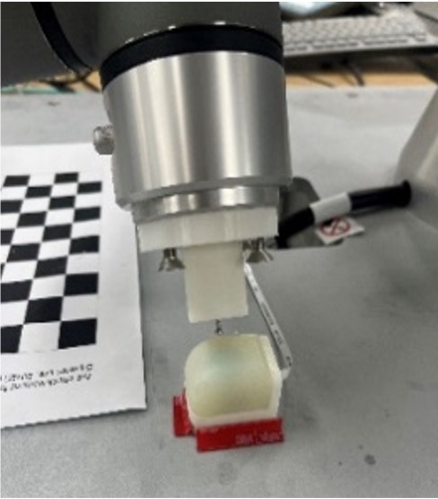

Contact Location Estimation on Dexterous Hand Fingertips

The sensorized fingertip the estimation method is built around.
0.85 mmavg. contact-location error
F/T onlyno vision, no tactile array
Overview
Once a hand closes on an object, the contact is exactly where the camera cannot see it. This work estimates where on the fingertip surface contact occurred from force/torque signals alone, so manipulation can keep a usable contact estimate under full visual occlusion.
What I did
- Designed the sensorized fingertip around a force/torque sensor, so that the contact point is recoverable from the measured wrench rather than from a dense tactile array.
- Developed the estimation algorithm mapping the measured force/torque to a contact location on the fingertip surface.
- Validated it against known applied contact points across the fingertip surface — 0.85 mm average error.
- Presented the method as a poster at ICCAS 2024 (Jeju, Korea).
Validation


